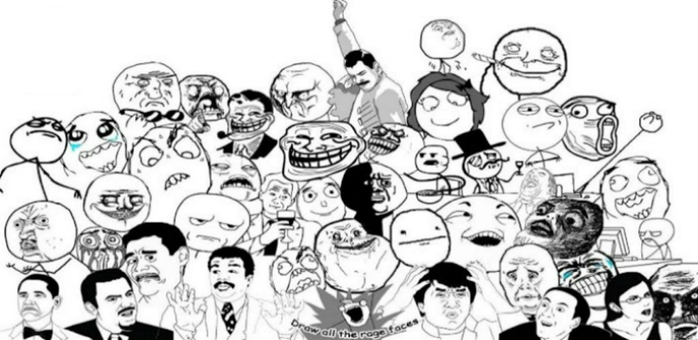

|
Atualmente vivemos em uma época em que todo lugar nos deparamos com MEMES,
principalmente na internet e faz parte do dia a dia das pessoas que passam o tempo nela. O conceito de meme se origina, nas mais diferentes cronologias, de um debate controverso na sociobiologia na década
de 1970. O termo é empregado pela primeira vez de forma absolutamente despretensiosa e praticamente de relance, como um desvio colateral do
argumento a que se propunha o renomado etólogo Richard Dawkins.
|
|
|
|
|  |
|
Podemos definir memes como uma unidade básica da memória ou do conhecimento que o ser humano transfere para outros por meio da imitação de algo.
O que inclui músicas, imagens, pessoas, animais, eventos, desenhos e etc. Hoje em dia, memes servem como uma maneira de divertir, relatar ou até criticar algo que está presente em seu meio.
Porém, muitas pessoas não sabem muito bem sobre como o conceito "meme" surgiu e muito menos sua história.
|
|
Todos nós compartilhamos os hábitos, os modos de falar e seguimos a tendência de nosso interesse. Mas a teoria de Richard Dawkins, Memética, nos propõe a ideia de
que somos apenas hospedeiros de idéias que se espalham por aí como uma espécie de vírus, conhecido como meme, termo que acabou viralizando.
Dawkins concebe uma espécie de evolucionismo cultural, que ocorreria em paralelo e em complemento à evolução natural,
através de um segundo replicador, diferente dos genes.
|
| |
|
|
| |